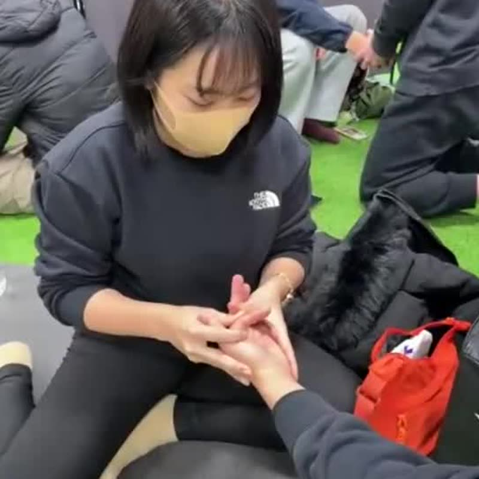

Certification
認定講師制度
技術を実践する人から、技術を伝える人へ。
現在、制度の内容を準備しています。
Why
なぜ講師を育てるのか

これまで零式の講座は、創設者が一人で担当してきました。学びたい人がいても、一人の講師が届けられる場所と回数には限りがあります。
同じ基準で技術を伝えられる講師が各地にいれば、学びたい人が学べる機会は広がります。そのために、技術を正しく受け継ぎ、教えられる人を育てる制度をつくります。
本制度はコンディショニングジャパン協会独自の制度です。国家資格や公的な資格ではありません。




Role
講師に期待する役割
実践する
担当する技術を、評価から再評価まで基準どおりに行えること。
説明する
なぜその順番で、何を見て、何をするのかを、受講生にわかる言葉で伝えること。
指導する
受講生の手の動きを見て、つまずきに気づき、習得と安全を支えること。
振り返る
講座の進め方や自分の説明を見直し、教材の更新や学び直しを続けること。
Concept
1コンテンツにつき
最大10人という構想
構想では、12のコンテンツそれぞれについて、認定講師は最大10人までとしています。
これは講師として認定する人数の上限についての構想です。一般の講座の受講定員や、現在の募集枠・残席を示すものではありません。
同じ人が複数のコンテンツを担当できるかどうかなど、詳しい運用は決定後にご案内します。
Practice / Teaching
実践する力と、教える力

実践する力
- 目の前の一人を評価し、手を動かせる
- 自分の感覚で、変化に気づける
- 自分のお客様に結果を説明できる
教える力
- 感覚を、手順と言葉に分けて伝えられる
- 受講生ごとのつまずきに気づき、修正できる
- 受講生同士の練習を安全に進められる
Flow
学習から認定までの流れ

現時点の設計案です。正式な手順は決定後にご案内します。
制度の案内を受け取る
制度の考え方や今後の予定を知る段階です。
条件を確認する
担当したいコンテンツと、必要な学習の内容を確認します。
必要な学習
担当コンテンツの技術と、その背景にある考え方を学びます。
実践と指導の確認
技術を行う力と、教える力の両方を確認します。
認定
協会の基準を満たした方を、担当コンテンツの講師として認定します。
継続的な学びと活動
認定後も学び直しを続けながら、講座の担当などの活動につなげます。


After certification
認定後の学びと活動

認定はゴールではなく、教える側としての学びの始まりと考えています。担当するコンテンツの講座開催、教材や指導方法の共有、講師同士での学び直しなど、認定後の活動と支援の内容は現在検討しています。
認定は、収入や集客を保証するものではありません。
FAQ
よくある質問
認定講師になるための条件はありますか。
受講条件・必要な学習・確認の方法は、現在検討しています。決定後にご案内します。
国家資格は必要ですか。
国家資格の要否を含め、条件は決定後にご案内します。なお、認定講師は協会独自の制度で、国家資格や公的資格ではありません。
費用や更新制度はありますか。
費用、更新の有無は決定後にご案内します。
「10人まで」は募集人数ですか。
いいえ。1つのコンテンツごとの認定講師の上限についての構想で、募集枠や残席を示すものではありません。
どこで最新の情報を確認できますか。
認定講師制度の案内ページで、制度の考え方と今後のご案内の受け取り方をお知らせしています。
Next
制度について知る
制度の詳しいご案内は、認定講師制度の専用ページにまとめています。